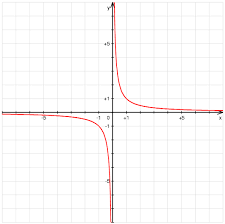

| Choisissez votre langue ! | Choose your language ! |
Asymptotes
Asymptotes
Définition générale
Voici une appliquette qui vous permet de visualiser deux graphes de fonctions f et g.Le graphe de f est représenté en vert et celui de g en bleu.
En rouge on voit la verticale d'abscisse x qui coupe chaque graphe en un point I1 et I2 respectivement.
la quantité δ(x) qui s'affiche en rouge en haut est la mesure algébtique du segment [I1I2].
Vous pouvez déplacer cette verticale en la tirant par le point rouge avec la souris.
Cliquez sur 'Zoom-' pour augmenter l'échelle.
Cliquez sur 'Zoom-' pour revenir en arrière.
Remarquez que plus x grandit et plus les courbes représentant f et g tendent à se confondre.
General definition
Here is an applet that allows you to visualize two graphs of functions f and g.The graph of f is shown in green and that of g in blue.
In red we see the vertical of abscissa x which intersects each graph at a point I1 and I2 respectively.
the quantity δ(x) displayed in red at the top is the algebtic measure of the segment [I1I2].
You can move this vertical by dragging it by the red dot with the mouse.
Click 'Zoom-' to increase the scale.
Click 'Zoom-' to go back.
Note that the more x grows, the more the curves representing f and g tend to merge.
C'est cette situation que l'on décrit par le mot 'asymptote'
. It is this situation that is described by the word 'asymptote'.
définition 1
Soient f et g deux fonctions numériques définies dans des intervalles de la forme ]a,+∞[ on dit que f et g sont
'asymptotes'
l'une de l'autre pour x tendant vers +∞ si leurs représentations graphiques tendent à se confondre quand x devient de plus en plus grand, formellement si: \(\lim_{x \to +\infty }\left ( f(x)-g(x) \right )=0\)
definition 1
Let f and g be two numerical functions defined in intervals of the form ]a,+∞[ we say that f and g are
'asymptotes'
one of the 'other for x tending to +∞ if their graphical representations tend to merge when x becomes larger and larger, formally if: \(\lim_{x \to +\infty }\left ( f(x)-g(x) \right )=0\)
Evidemment, de façon symétrique, on peut également avoir deux courbes asymptotes pour x→-∞.
Asymptote horizontale
Obviously, symmetrically, we can also have two asymptote curves for x→-∞.
Horizontal asymptote
définition 2
L'asymptote
'horizontale'
correspond à la situation précédente quand une des deux fonctions est constante.
definition 2
The
'horizontal'
asymptote corresponds to the previous situation when one of the two functions is constant.
Voici un exemple d'asymptote horizontale.
Le fonctionnement de l'appliquette est identique à celui de la précédente.
Le fonctionnement de l'appliquette est identique à celui de la précédente.
Here is an example of a horizontal asymptote.
The operation of the applet is identical to that of the previous one.
The operation of the applet is identical to that of the previous one.
Asymptote oblique
Oblique asymptote
définition 3
On dit qu'on a affaire à une asymptote
'oblique'
quand une des deux fonctions est une fonction affine (du type x→ ax+b) non constante (a≠0).
definition 3
We say that we are dealing with an
'oblique'
asymptote when one of the two functions is an affine function (of the type x→ ax+b) which is not constant (a≠ 0).
Voici une appliquette qui vous permet de visualiser une asymptote oblique y=x.
Fonctionnement identique aux deux précédentes.
Fonctionnement identique aux deux précédentes.
Here is an applet that allows you to visualize an oblique asymptote y=x.
Operation identical to the two previous ones.
Operation identical to the two previous ones.
Asymptote verticale
L'asymptote dite verticale ne correspond pas exactement au formalisme développé précédemment dans la mesure où une droite verticale n'est jamais le graphe d'une fonction. Cependant on utilise cette terminologie quand la fonction tend vers un infini lorsque la variable tend vers une valeur finie.Dans l'exemple ci-dessus, la courbe dont le graphe est tracé en rouge (f(x)=x+1/x) possède une 'asymptote verticale' pour x→o+.
Vertical asymptote
The so-called vertical asymptote does not correspond exactly to the formalism developed previously insofar as a vertical line is never the graph of a function. However, this terminology is used when the function tends to infinity when the variable tends to a finite value.In the example above, the curve whose graph is drawn in red (f(x)=x+1/x) has a 'vertical asymptote' for x→o+.

Direction asymptotique
Nous traitons seulement le cas x→+∞, le cas x→-∞ étant parfaitement symétrique.Asymptotic direction
We only deal with the case x→+∞, the case x→-∞ being perfectly symmetrical.théorème 1
Une condition nécessaire pour que la courbe représentative de la fonction y=f(x) admette une droite asymptote d'équation y=ax+b est que limx→+∞ f(x)/x=a existe.
theorem 1
A necessary condition for the curve representative of the function y=f(x) to admit an asymptote line with equation y=ax+b is that limx→+∞ f(x)/x =a exists.
Cela résulte du théorème sur la limite des quotients. Si limx→+∞(f(x)-ax-b)=0 alors a plus forte raison limx→+∞(f(x)-ax-b)/x=0. Comme limx→+∞;b/x=0 il vient a=limx→+∞f(x)/x.
Les exemples qui suivent montrent que cette condition n'est pas suffisante.
Les exemples qui suivent montrent que cette condition n'est pas suffisante.
This follows from the theorem on the limit of quotients. If limx→+∞(f(x)-ax-b)=0 then a fortiori limx→+∞(f(x)- ax-b)/x=0. As limx→+∞;b/x=0 it comes a=limx→+∞f(x)/x.
The following examples show that this condition is not sufficient.
The following examples show that this condition is not sufficient.
définition 4
On dit que la représentation graphique de la courbe d'équation y=f(x) admet une
'direction asymptotique'
pour x→+∞ si la direction du vecteur \(\overrightarrow{OM(x)}\)) où M(x) est le point de coordonnées (x,y=f(x)) tend vers une limite.
definition 4
We say that the graphical representation of the curve with equation y=f(x) admits an
'asymptotic direction'
for x→+∞ if the direction of the vector \(\overrightarrow{OM(x)}\)) where M(x) is the point of coordinates (x,y=f(x)) tends towards a limit.
Notons que cette direction est caractérisée par la pente de la droite (OM(x)).
Voici une appliquette qui vous permet de visualiser une direction asymptotique avec asymptote oblique.
Voici une appliquette qui vous permet de visualiser une direction asymptotique avec asymptote oblique.
Note that this direction is characterized by the slope of the line (OM(x)).
Here is an applet that allows you to visualize an asymptotic direction with an oblique asymptote.
Here is an applet that allows you to visualize an asymptotic direction with an oblique asymptote.
Voici une appliquette qui vous permet de visualiser une direction asymptotique nulle SANS asymptote horizontale.
Here is an applet that allows you to visualize a zero asymptotic direction WITHOUT any horizontal asymptote.
Voici une appliquette qui vous permet de visualiser un cas où il n'existe pas de direction asymptotique.
Cliquez sur 'Zoom-' pour diminuer l'échelle.
Cliquez sur 'Zoom-' pour diminuer l'échelle.
Here is an applet that allows you to visualize a case where there is no asymptotic direction.
Click on 'Zoom-' to decrease the scale.
Click on 'Zoom-' to decrease the scale.
Détermination d'une asymptote oblique
Cette fois encore, nous traitons seulement le cas x→+∞, le cas x→-∞ étant parfaitement symétrique.Nous nous plaçons dans l'hypothèse où une direction asymptotique a été décelée.
Nous supposons donc que limx→+∞f(x)/x=a existe.
Determination of an oblique asymptote
This time again, we only deal with the case x→+∞, the case x→-∞ being perfectly symmetrical.We assume that an asymptotic direction has been detected.
We therefore assume that limx→+∞f(x)/x=a exists.
théorème 2
Dans ces conditions la droite d'équation y=ax+b est asymptote à la courbe représentative y=f(x) si et seulement si limx→+∞(f(x)-ax) existe. Cette limite vaut alors b.
theorem 2
Under these conditions the straight line with equation y=ax+b is asymptote to the representative curve y=f(x) if and only if limx→+∞(f(x)-ax) exist. This limit is then equal to b.
Cette propriété résulte simplement de la définition d'une asymptote oblique.
Position de la courbe par rapport à son asymptote
This property simply results from the definition of an oblique asymptote.
Position of the curve with respect to its asymptote
Notons que rien n'empêche une courbe de traverser son asymptote, et cela même une infinité de fois. Voici une appliquette qui vous permet de visualiser un tel cas.
Cliquez sur 'Zoom-' pour diminuer l'échelle.
Vous pouvez déplacer la verticale en l'attrapant avec la souris par le point rouge.
Cliquez sur 'Zoom-' pour diminuer l'échelle.
Vous pouvez déplacer la verticale en l'attrapant avec la souris par le point rouge.
Note that nothing prevents a curve from crossing its asymptote, even an infinite number of times. Here is an applet that allows you to visualize such a case.
Click 'Zoom-' to decrease the scale.
You can move the vertical by grabbing it with the mouse by the red dot.
Click 'Zoom-' to decrease the scale.
You can move the vertical by grabbing it with the mouse by the red dot.
théorème 3
Quand l'asymptote oblique ou horizontale existe d'équation y=ax+b, les points d'intersection de la courbe avec son asymptote ont des abscisses solutions de l'équation f(x)=ax+b.
theorem 3
When the oblique or horizontal asymptote exists with equation y=ax+b, the points of intersection of the curve with its asymptote have abscissa solutions of the equation f(x)=ax+b.
théorème 4
Quand l'asymptote oblique ou horizontale existe d'équation y=ax+b, les points de la courbe situés au dessus de l'asymptote ont des abscisses solutions de l'inéquation f(x) > ax+b.
theorem 4
When the oblique or horizontal asymptote exists with equation y=ax+b, the points of the curve located above the asymptote have abscissa solutions of the inequality f(x) > ax+b.
théorème 5
Quand l'asymptote oblique ou horizontale existe d'équation y=ax+b, les points de la courbe situés en dessous de l'asymptote ont des abscisses solutions de l'inéquation f(x)<ax+b.
theorem 5
When the oblique or horizontal asymptote exists with equation y=ax+b, the points of the curve located below the asymptote have abscissa solutions of the inequality f(x) < ax+b. Toutes ces propriétés résultent de la définition d'une asymptote oblique (ou horizontale).
Etudier la position de la courbe par rapport à son asymptote reviendra donc, comme toujours en analyse, à résoudre des équations et des inéquations (ce qui n'est pas toujours simple).
Etudier la position de la courbe par rapport à son asymptote reviendra donc, comme toujours en analyse, à résoudre des équations et des inéquations (ce qui n'est pas toujours simple).
Branches paraboliques
All these properties result from the definition of an oblique (or horizontal) asymptote.
Studying the position of the curve with respect to its asymptote will therefore come down, as always in analysis, to solving equations and inequalities (which is not always simple).
Studying the position of the curve with respect to its asymptote will therefore come down, as always in analysis, to solving equations and inequalities (which is not always simple).
Parabolic branches
définition 5
Lorsque qu'on a limx→+∞f(x)=+∞ et qu'on détecte une direction asymptotique de pente a sans trouver d'asymptote, on dit parfois que la représentation graphique de f présente une
'branche parabolique'
dans la direction de la droite y=ax.
definition 5
When we have limx→+∞f(x)=+∞ and we detect an asymptotic direction with slope a without finding an asymptote, we sometimes say that the graphical representation of f has a
'parabolic branch'
in the direction of the line y=ax.
Cette définition ne signifie nullement que la courbe possède une parabole pour asymptote, c'est tout simplement parce qu'historiquement la parabole d'équation y=x2 est un des tout premier exemple de cette situation. cette courbe possède une direction asymptotique verticale sans pour autant posséder une droite asymptote. En somme, détecter une 'branche parabolique', c'est dire qu'on ne peut faire mieux, c'est un constat d'échec du point de vue de la recherche de droites asymptotes.
This definition does not mean that the curve has a parabola for asymptote, it is quite simply because historically the parabola with equation y=x2 is one of the very first example of this situation. this curve has a vertical asymptotic direction without however having a line as an asymptote. In short, detecting a 'parabolic branch' is to say that one cannot do better, it is an acknowledgment of failure from the point of view of the search for straight asymptotes.
|
Création Gilles Dubois - licence CC-BY-SA
Created by Gilles Dubois - licence CC-BY-SA
|
Septembre 2023
September 2023
|
Version mobile Jquery
Mobile Jquery version
|
|